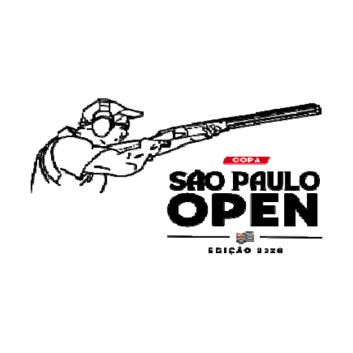

Versão de 13/11/2026 · Lei Geral de Proteção de Dados (Lei 13.709/2018)
A Copa é organizada pelo Clube de Caça e Tiro São Paulo (CCTSP), CNPJ 43.582.857/0001-70. É a organização que decide o que é divulgado neste site e responde pelos dados que aparecem aqui (na linguagem da lei, é a controladora).
Contato para assuntos de dados pessoais: Vanessa, da organização, pelo WhatsApp que aparece na página de inscrição da Final ↗.
| Dado | De onde vem | Quem vê |
|---|---|---|
| Nome do atirador | Súmulas e resultados das etapas, lançados pela organização. Às vezes inclui o apelido informado pelo próprio atleta. | Público |
| Nota de cada etapa e se a participação foi presencial ou on-line | Súmulas e resultados das etapas, lançados pela organização. | Público |
| Classificações (Top Gun, Majorança, média, colocação e vaga na Final) | Calculadas pelo site a partir das notas, pelas regras do regulamento. | Público |
| Cotas do fundo de premiação de cada atirador | Número de etapas disputadas e situação informada pelo LiveClays. Mostra quantas cotas o atirador tem, quantas faltam, o valor correspondente e, depois de confirmada a inscrição na Final, se ele concorre ao prêmio em dinheiro. | Público |
| Resultado da Final, número e categoria do atirador | LiveClays, onde a organização lança os tiros no dia da prova. | Público |
| Inscrições na Final | LiveClays. O site mostra os totais (confirmadas, concorrendo ao prêmio e aguardando conferência) e, a partir da véspera da prova, a lista de quem está com a inscrição confirmada. Quem está aguardando conferência não é identificado. | Público |
| Fundo de premiação e patrocínio | Planilha da organização. Só os totais por etapa, sem valor por pessoa. | Público |
Não aparecem nem ficam guardados neste site: CPF, RG, data de nascimento, endereço, telefone, e-mail, foto, clube, dados bancários e comprovantes de pagamento.
Os dados não são usados para publicidade nem para criar perfis, e não são vendidos nem cedidos a terceiros.
A inscrição e o pagamento da Final são feitos no LiveClays, o sistema que a organização usa para as inscrições e os resultados ao vivo. O telefone, o e-mail e o comprovante de quem se inscreve ficam só lá, com a organização, e não chegam a este site.
Este site apenas lê do LiveClays o que já é público lá: a lista de atiradores, a situação da inscrição e os resultados.
Este site não usa cookies. Também não usa ferramentas de estatística ou de publicidade (como Google Analytics ou pixels de redes sociais), fontes ou programas de terceiros, mapas nem vídeos incorporados. Por isso não há aviso de cookies.
Algumas coisas ficam guardadas só no seu aparelho e não são enviadas à organização nem a ninguém:
Para apagar tudo isso, basta limpar os dados deste site no seu navegador ou desinstalar o aplicativo.
Ao compartilhar o painel de um atirador, o nome dele vai no endereço do link.
Nenhuma delas recebe, por este site, dados seus além dos dados técnicos da conexão.
Os resultados ficam publicados como registro esportivo da edição de 2026, enquanto a organização mantiver este site no ar. Quem pedir a retirada do nome é atendido antes disso (veja o item 8).
Os arquivos de resultados ficam em um repositório público, que guarda também as versões anteriores. Por isso uma informação corrigida ou retirada do site pode continuar no histórico técnico por algum tempo.
Você pode, a qualquer momento e sem custo (LGPD, art. 18):
Como pedir: fale com a Vanessa, da organização, pelo WhatsApp que aparece na página de inscrição da Final ↗. Respondemos em até 15 dias.
Na correção, a organização confere com a súmula e publica o dado certo. Na retirada, o nome sai do site e as notas podem ser mantidas sem identificação, para não mudar a classificação e o fundo de premiação dos demais atletas. Cópias feitas por terceiros, como buscadores e capturas de tela, não estão sob o controle da organização.
Se não ficar satisfeito com a resposta, você pode reclamar à Autoridade Nacional de Proteção de Dados (ANPD).
Se o atleta tiver menos de 18 anos, o pedido pode ser feito pelo pai, pela mãe ou pelo responsável.
Se o tratamento dos dados mudar, este aviso é atualizado e a data no alto da página muda.